BLOCS EN BÉTON CREUX
Les blocs en béton permettent la réalisation de murs ou de cloisons de séparation, destinés aux maisons individuelles, aux logements collectifs et aux bâtiments tertiaires.
500x200x100(mm)
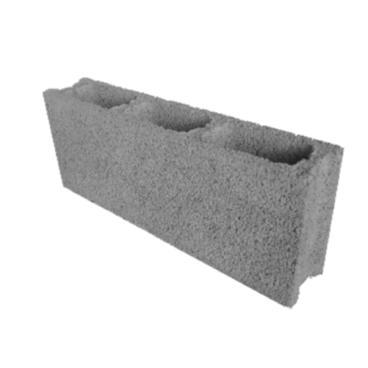500x200x150(mm)
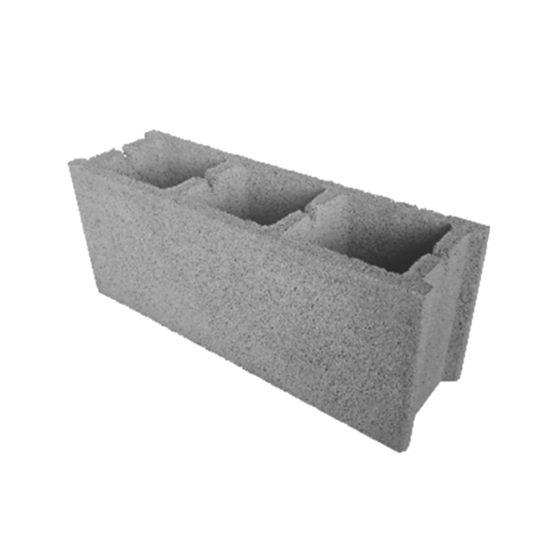500x200x200(mm)
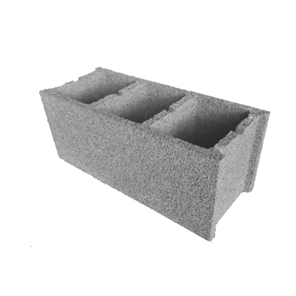500x200x150(mm)
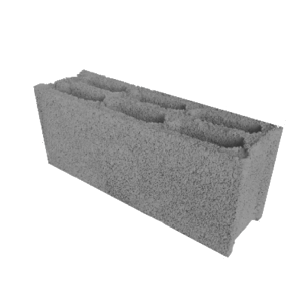500x200x200(mm)
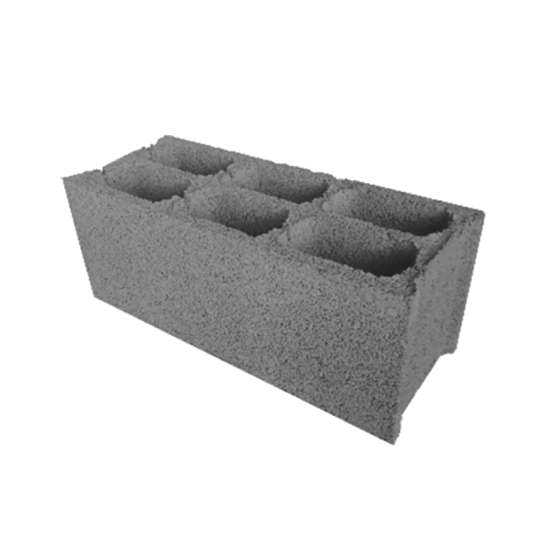BLOCS EN BÉTON CREUX
Eléments de coffrage entre poutrelles, les hourdis sont choisis en fonction de la performance attendue du
plancher (mécanique, thermique, acoustique) et son positionnement prix.
Solution coffrante polyvalente
adaptée à tout type de planchers pour tout type de bâtiment.
Les hourdis à trous borgnes permettant de réaliser les obturateurs en bout de travées.
220x200x120(mm)
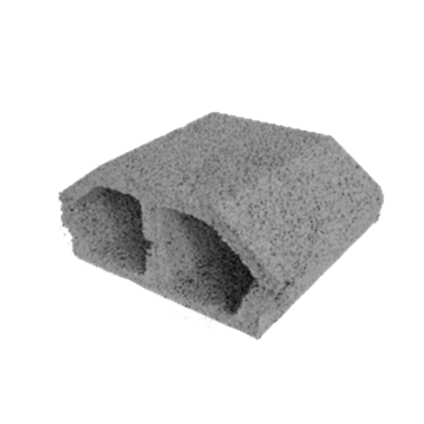380x200x120(mm)
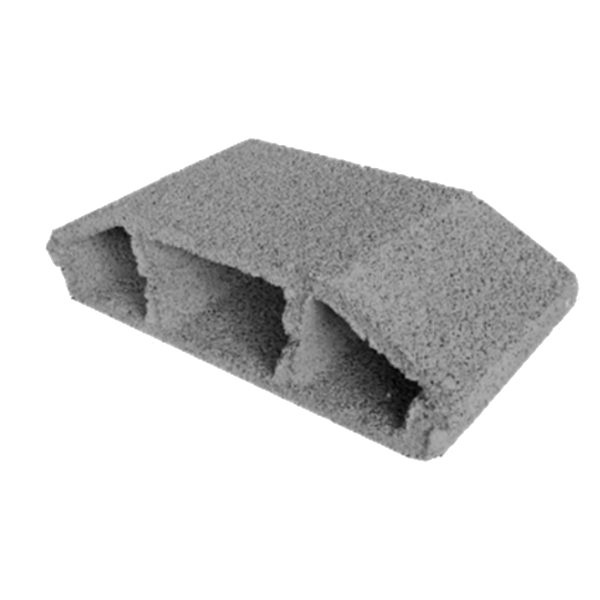480x200x120(mm)
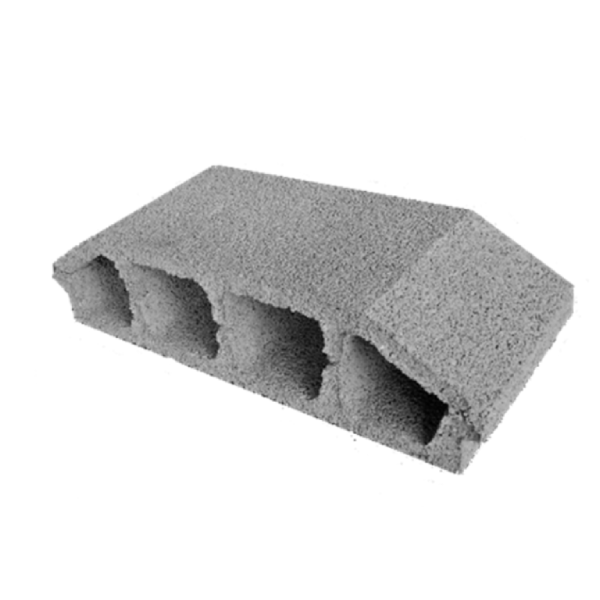530x200x160(mm)
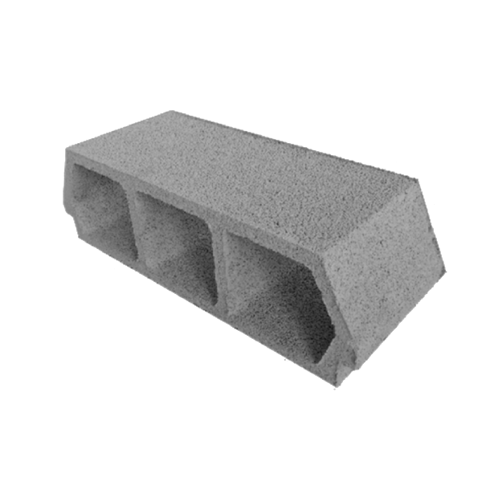530x200x200(mm)
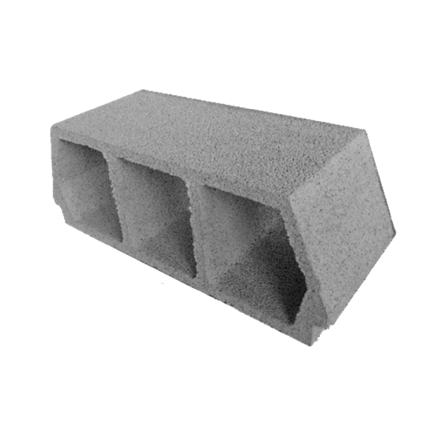530x200x250(mm)
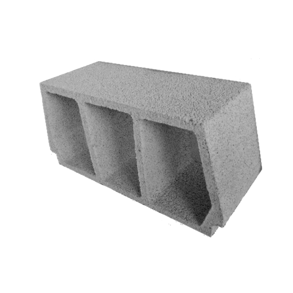Blocs de contention
Principaux avantages/caractéristiques des blocs de contention
- Vitesse de construction - Économique;
- Durabilité;
- Esthétique;
- Flexibilité constructive (courbes et coins);
- Possibilité de réutilisation des matériaux;
- Facilité d'expansion ou de suppression de blocs
220x200x120(mm)
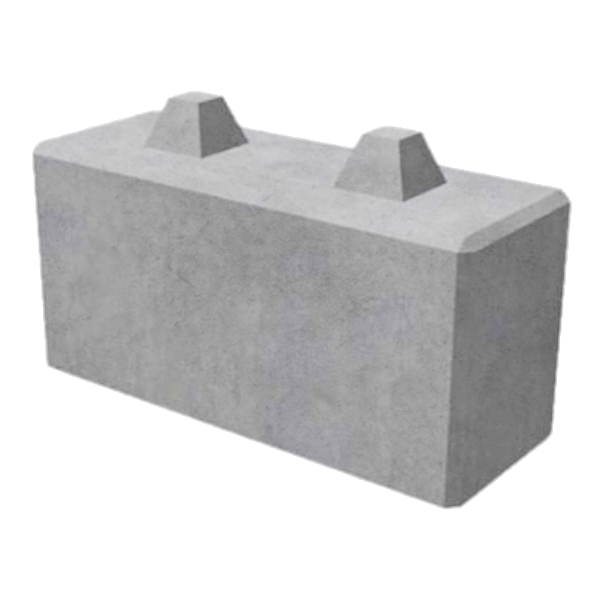BLOCS EN P ET U
Les blocs en béton permettent la réalisation de murs ou de cloisons de séparation, destinés aux maisons individuelles, aux logements collectifs et aux bâtiments tertiaires.
Ces modèles permettent la réalisation de poteaux raidisseurs et chaînage.
Absence et économie de coffrage
500x200x50(mm)
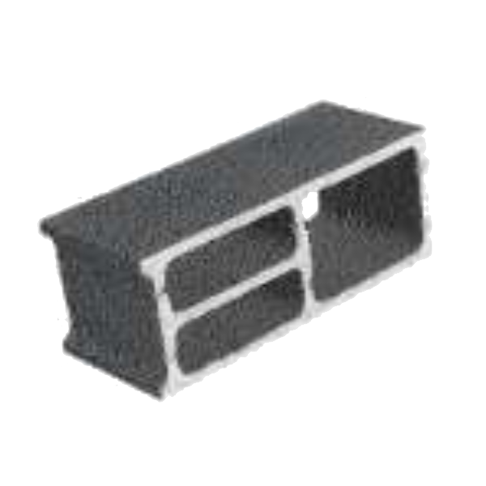500x200x200(mm)
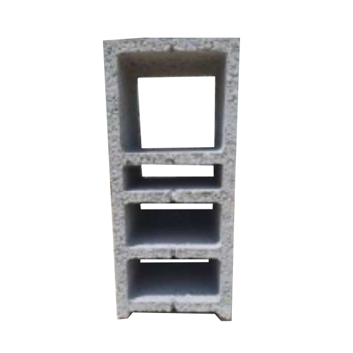500x200x150(mm)
500x200x200(mm)
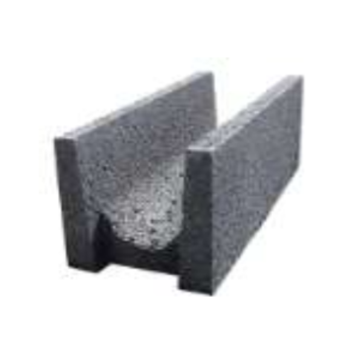CANIVEAUX 60 X 60 X 200
- Classe de resistence du béton: C25/30
- Beton fabrique en central à béton
- Fer à béton haute adhérense Fe500
- Ratio acier: 34kg/m3
- Ferraillage: 9 HA8 L = 2,09m esp 21cm 7 HA6 L = 1,95m
60x60x200(mm)
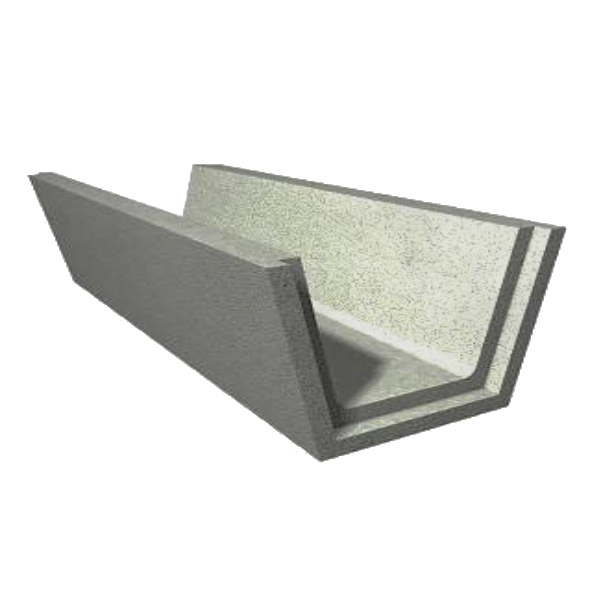CANIVEAUX 80 X 80 X 200
- Classe de resistence du béton: C25/30
- Beton fabrique en central à béton
- Fer à béton haute adhérense Fe500
- Ratio acier: 30kg/m3
- Ferraillage: 9 HA8 L = 2,09m esp 21cm 9 HA6 L = 1,95m
60x60x200(mm)
CANIVEAUX 100 X 100 X 200
- Classe de resistence du béton: C25/30
- Beton fabrique en central à béton
- Fer à béton haute adhérense Fe500
- Ratio acier: 28kg/m3
- Ferraillage: 9 HA8 L = 2,09m esp 21cm 11 HA6 L = 1,95m
60x60x200(mm)
PAVÉS
- Resistence (Mpa) >3,6
- Poid aproximatif 200mm 3,845kg / 235mm 3,580kg / 100mm 3,045kg.
- Unités par m2 200mm 36 / 235mm 36 / 100mm 100.
200x165x60(mm)
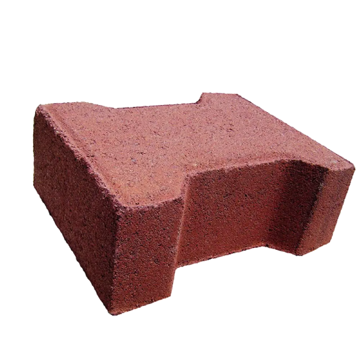200x165x60(mm)
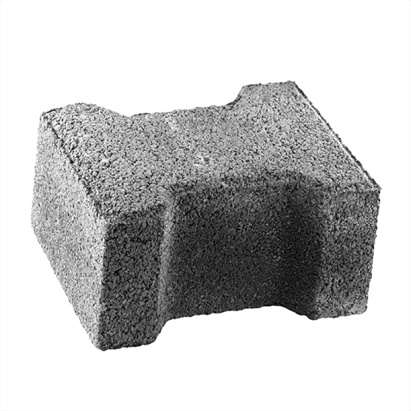235x115x60(mm)
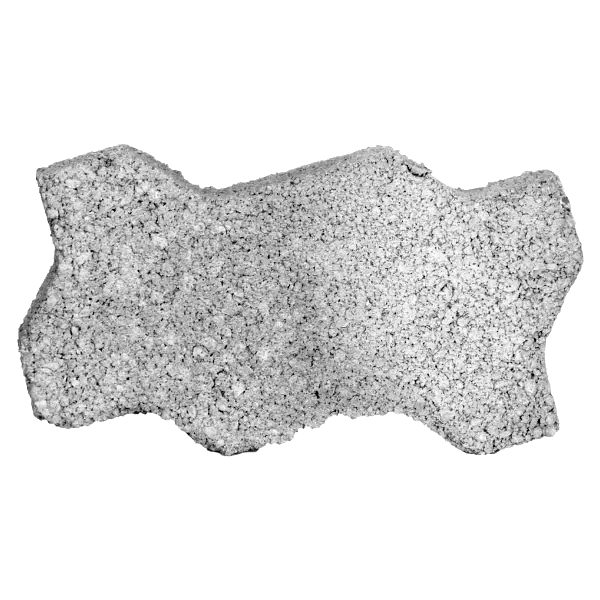100x100x100(mm)
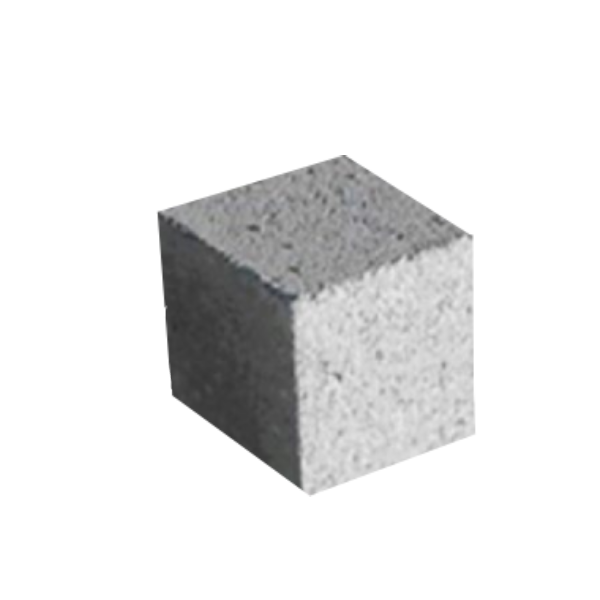